一條 1869 年通車、1910 年廢棄，又在 1975 年被一群鐵道迷救回來的山線。這趟車沿著它的折返路線往下開，沿途聽 14 位志工與員工說：一條文化資產鐵路，到底在保存什麼。A mountain line opened in 1869, abandoned in 1910, and rescued in 1975 by a group of railway enthusiasts. This train follows its switchbacks down the mountain. Along the way, 14 volunteers and staff explain what a heritage railway is really preserving.
2026.07.22 – 08.05 實習紀錄Internship record 羅聖皓 Sheng Hao Lo
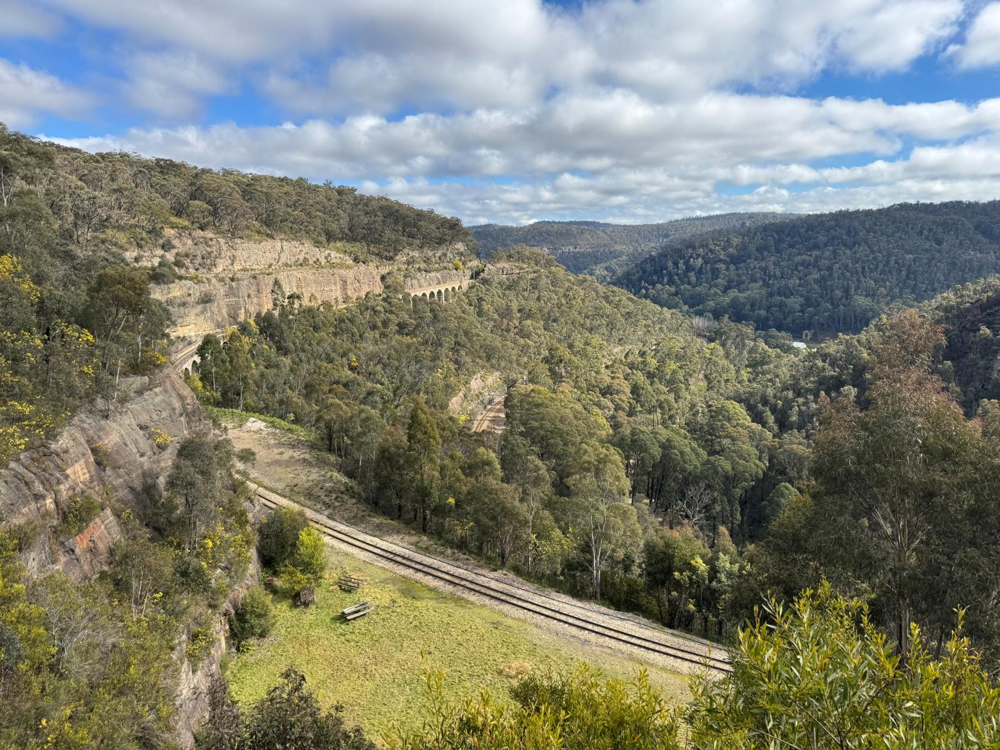
從觀景台看下去，山壁上有兩層鐵路：上層是沿著砂岩崖壁的石造高架橋，下層是彎過草地的軌道。同一列火車會先後經過這兩層。From the lookout you can see two levels of railway on the hillside: above, a stone viaduct along the sandstone cliff; below, a track curving across the grass. The same train passes both, one after the other.
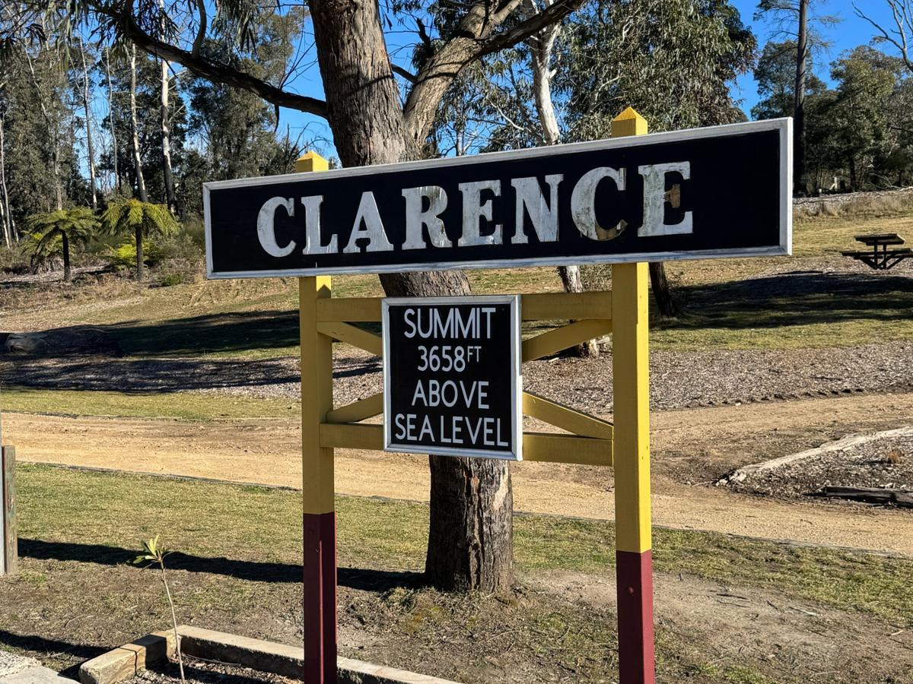
Clarence 是全線最高點，站牌寫著海拔 3658 呎。接下來的路，都是下坡。Clarence is the highest point on the line. The sign says 3658 feet above sea level. From here on, it is all downhill.
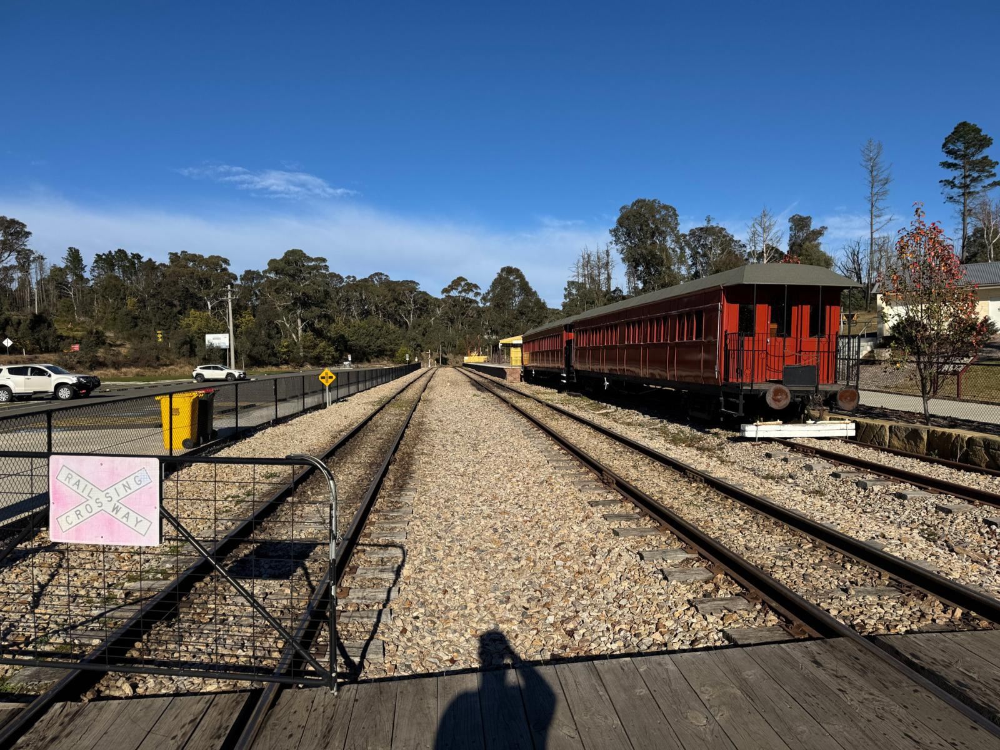
Clarence 車站。軌道往前延伸，進入 Clarence 隧道後開始下山。Clarence station. The track runs ahead into the Clarence Tunnel, where the descent begins.
01 Clarence → Clarence Tunnel
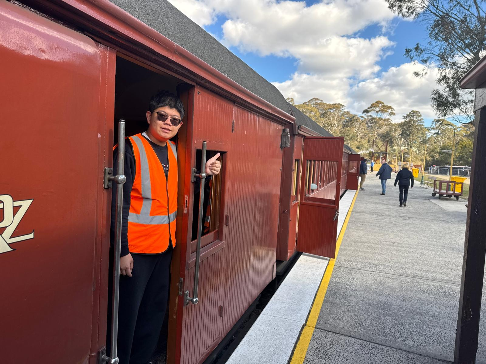
All Aboard! 車門關上之前。Clarence，準備往下開。All Aboard! Before the doors close. Clarence, ready to head down.
41 年的幹線，50 年的觀光鐵路41 years as a main line, 50 years as a tourist railway
「扣掉中間關閉的時間，它當觀光景點的時間已經比當幹線還長。」——前董事長 Lee“Even taking out the years it was closed, it has now been a tourist attraction for longer than it was a main line.” — Lee, former Chairman
年代與事件整理自 Lee 訪談（2026）；1901 年事故取自 Lithgow「Furnace Fire & Forge Heritage Trail」解說牌。舊照片為 Zig Zag Railway 檔案。Dates and events are from the interview with Lee (2026). The 1901 accident is from the Lithgow “Furnace Fire & Forge Heritage Trail” sign. Old photos are from the Zig Zag Railway archive.
02 Top Points · 第一次折返First reversal
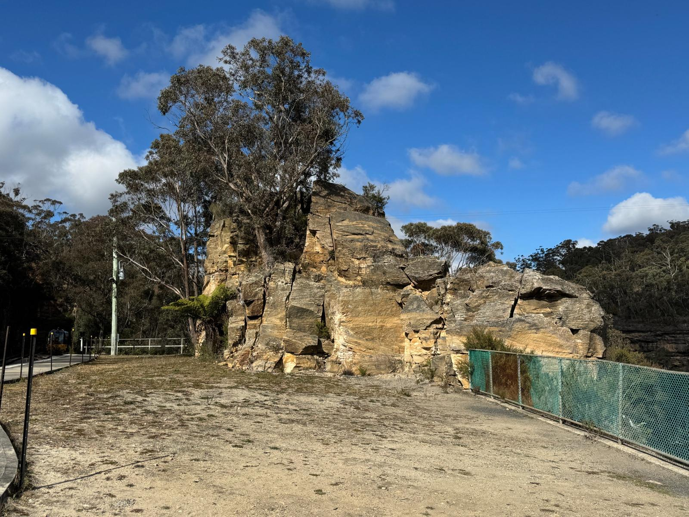
Top Points 月台旁的砂岩巨石。The sandstone boulder beside the Top Points platform.
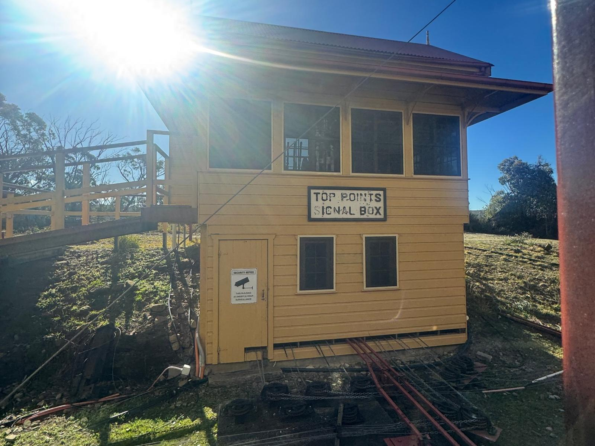
黃色的 Top Points 號誌樓，道岔的連桿從底下伸出去。The yellow Top Points signal box. The rodding to the points runs out from underneath.
為什麼是「之字形」？Why a “zigzag”?
火車爬不上太陡的坡，所以路線在山壁上來回切。到了盡頭，火車停下、換方向，機車換到另一頭，再往下一段開。不是環狀線，也不是迴圈。A train can't climb a slope that is too steep, so the line cuts back and forth across the hillside. At the end of each leg, the train stops and changes direction, the engine moves to the other end, and the train runs the next leg. It isn't a loop, and it isn't a circle.
1869 年的之字形，今天的觀光鐵路The 1869 zigzag, today's tourist railway1910 年的十隧道幹線The 1910 Ten Tunnels main line
1869 年起，火車在這裡下坡、停車、換方向，機車換到另一頭，再開下一段。1910 年起，幹線改走旁邊的十座隧道，至今仍是雪梨往 Lithgow 的主要路線；之字形則留給了觀光列車。From 1869, trains came down here, stopped and changed direction; the engine moved to the other end, and the train ran the next leg. From 1910, the main line took the ten tunnels alongside instead, and it is still the main route from Sydney to Lithgow. The zigzag was left to the tourist trains.
為什麼不直接挖隧道？Why not just dig a tunnel?
1860 年代不是沒有技術，而是挖隧道的時間、人力和成本都太高。設計者 John Whitton 據說參考了其他國家的之字形鐵路。1910 年，襯砌隧道用的磚可以大量生產了，新的十隧道路線才在旁邊開通。In the 1860s the technology existed; the time, labour and cost of tunnelling were simply too high. The designer, John Whitton, is said to have drawn on zigzag railways in other countries. By 1910 the bricks used to line tunnels could be mass-produced, and the new Ten Tunnels line was opened alongside.
為什麼軌距是 3 呎 6 吋，不是原本的標準軌？Why is the gauge 3 ft 6 in, not the original standard gauge?
1970 年代合作社成立時，新南威爾斯州緊抓著車輛不放；昆士蘭和南澳願意賣，而兩州都用 3 呎 6 吋窄軌，所以整條線就改成窄軌。When the co-operative was formed in the 1970s, New South Wales held on tightly to its rolling stock. Queensland and South Australia were willing to sell, and both used 3 ft 6 in narrow gauge, so the whole line was converted to narrow gauge.
小遊戲Mini-game
你來當號誌員，把機車換到另一頭Be the signaller and run the engine around
火車到了折返點要往回開，可是機車還在車隊的「前面」。它靠的是兩條並行的軌道，繞到車廂的另一頭。拉下操作桿、開動機車，試試看。At a reversing point the train needs to head back, but the engine is still at the “front” of the train. It uses two parallel tracks to get round to the other end of the carriages. Pull the levers and drive the engine to try it.
八個步驟The eight steps
簡化操作表Simplified working table
路線Route
拉桿順序Lever order
A 軌 → 前端盡頭Road A → front dead end
2 → 1
前端盡頭 → B 軌Front dead end → Road B
3 → 2 → 1
B 軌 → 後端單線Road B → rear single line
4 → 5 → 6
後端單線 → A 軌Rear single line → Road A
4 放回4 back → 5 → 6
要改道岔，先依相反順序放回紅、藍桿。這是簡化的教學遊戲，拉桿的順序與顏色參考號誌樓的一般原理，不是 Top Points 的實際操作表。To change points, first put back the red and blue levers in reverse order. This is a simplified teaching game. The lever order and colours follow how signal boxes generally work; it is not the actual Top Points working diagram.
每一次切換道岔，都是號誌樓裡有人依順序拉下操作桿。Every time the points change, someone in the signal box has pulled the levers in the right order.
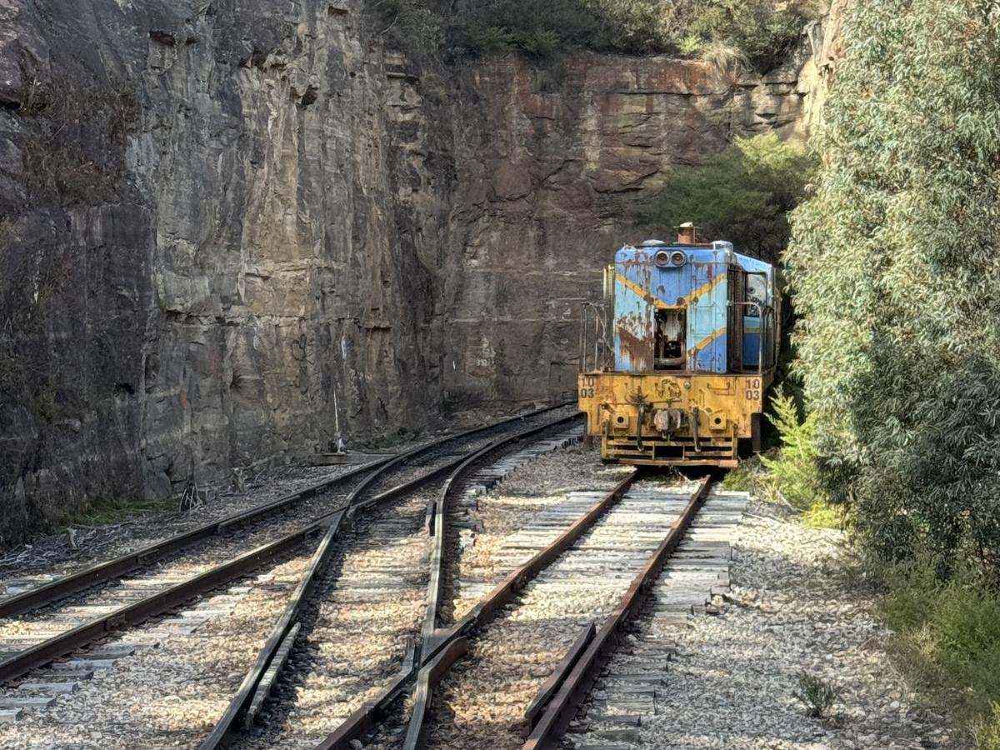
柴油機車駛進 Top Points。兩條軌道在這裡匯合，機車要換到列車的另一頭，靠的就是這兩條軌道之間的切換。A diesel locomotive running into Top Points. The two tracks join here. Switching between them is how the engine gets to the other end of the train.
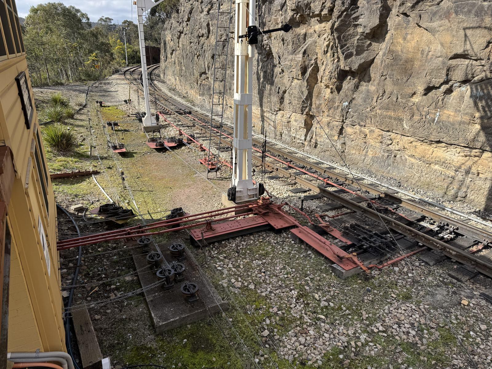
號誌樓前的道岔。現在大多數鐵路的道岔都是電動的，這裡卻仍然靠人力，從號誌樓拉桿、經過地上的連桿把道岔推過去。The points in front of the signal box. Most railways now use powered points, but here they are still worked by hand: a lever in the signal box pushes the points over through rodding along the ground.
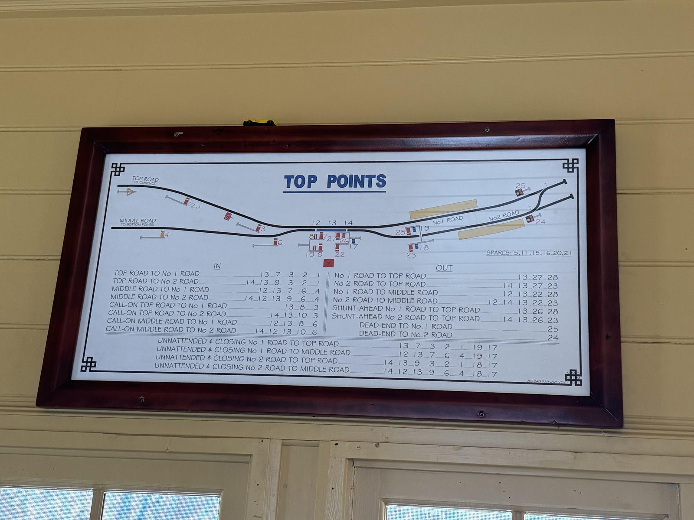
Top Points 號誌樓的操作表。每條路線要拉哪幾支、什麼順序，都寫在這張表上；順序不對，操作桿就拉不動。The working diagram in the Top Points signal box. Which levers to pull for each route, and in what order, is written on this chart. Pull them in the wrong order and the levers won't move.
03Top Points 月台Top Points platform
鐵路上的人The people of the railway
14 人中，8 人從小或青少年時就認識 Zig Zag；6 人的加入跟家人有關。點一張卡片，看他們為什麼來。Of the 14 people, 8 knew the Zig Zag as children or teenagers, and 6 joined because of family. Tap a card to see why they came.
加入時間以訪談時（2026 年 7–8 月）受訪者說的年資推算，標「約」的年份為推估。Joining dates are worked out from how long each person said they had been involved at the time of the interviews (July–August 2026). Years marked “about” are approximate.
04 Middle Road · 經過高架橋Over the viaduct
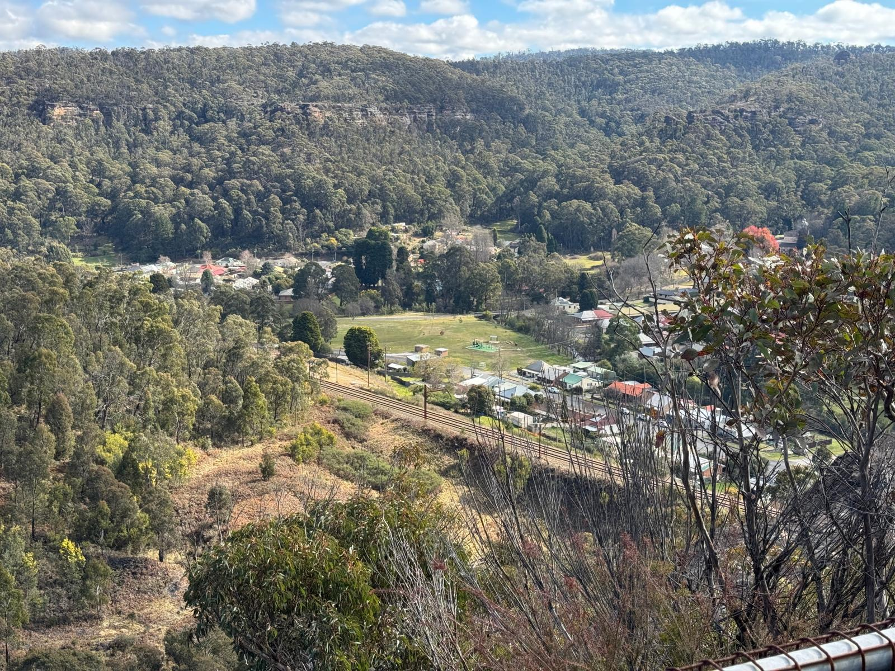
往山谷裡看，底下有電車線的雙軌，就是今天雪梨往 Lithgow 的幹線。Look down into the valley: the electrified double track below is today's main line from Sydney to Lithgow.
從入會到開蒸汽火車From joining up to driving steam
在 Zig Zag，志工和支薪員工走同一條升級路徑。所有人從基礎做起，以能力為準一格一格解鎖，沒有固定時數。點亮下一格試試看。At the Zig Zag, volunteers and paid staff follow the same path. Everyone starts at the bottom and unlocks each step by competence, not by hours. Try lighting up the next step.
05 Bottom Points · 第二次折返Second reversal
一條文化資產鐵路，到底在保存什麼？What is a heritage railway actually preserving?
我問了每一位受訪者同一個問題。大家第一個想到的多半是高架橋與隧道，但幾乎每個人都會再補上一個看不見的答案。點開每個主題看看。I asked everyone I interviewed the same question. Most first thought of the viaducts and tunnels, but almost everyone then added an answer you can't see. Open each topic to find out.
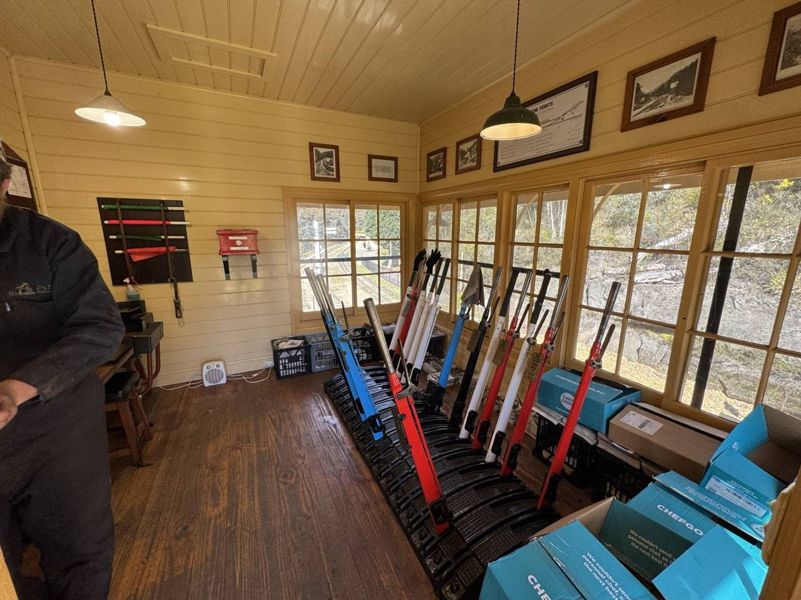
Bottom Points 號誌樓。窗台上有一個凹痕，是歷代號誌員坐出來的；新蓋的 Top Points 號誌樓就沒有。The Bottom Points lever frame. There is a dip worn into the windowsill by generations of signallers sitting there. The newly built Top Points signal box doesn't have one.
06 Bottom Points · 機廠The workshop
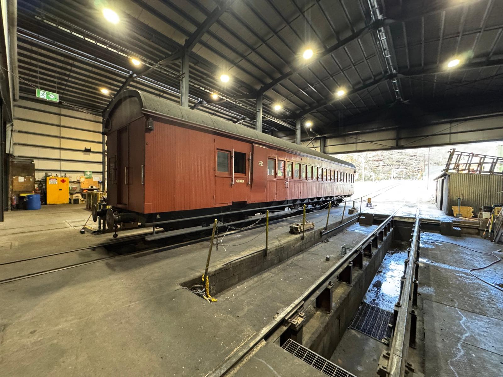
每一輛火車、每一節車廂的家Home to every locomotive and carriage
鐵路要每天開車，靠的不只是司機和號誌員。在山谷最底下的 Bottom Points 機廠，每一輪、每一扇窗、每一台機車，都有人一樣一樣檢查、拆下來修。實習期間，我在這裡跟著機廠的志工一起做了這些事。Running trains every day takes more than drivers and signallers. At the Bottom Points workshop, at the very bottom of the valley, every wheel, every window and every locomotive is checked, taken apart and repaired, one by one. During my internship, I worked here alongside the workshop volunteers.
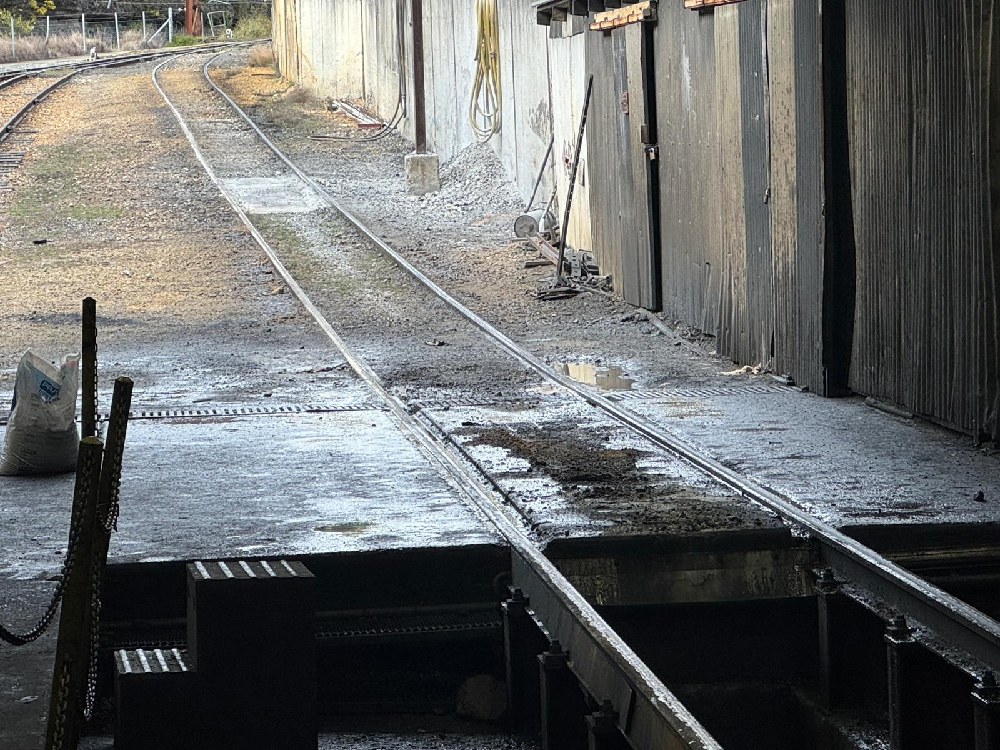
01
機車進廠：先把油清乾淨Into the workshop: clean up the oil first
蒸汽機車從這條軌道開進機廠，停在檢修坑上方，工作人員可以站進坑裡從底下檢查。機車進廠後，從引擎裡清出來的油會留在地上。我們撒上專用的吸油材料，把油吸乾後再掃起來：這樣比較好清理，人不會滑倒，油污也不會卡在軌道中間。Steam locomotives run into the workshop on this track and stop over the inspection pit, so the crew can stand in the pit and inspect from underneath. Once a loco is in, the oil cleaned out of the engine is left on the floor. We spread a special absorbent, let it soak up the oil, then sweep it up. It makes cleaning easier, nobody slips, and the oil doesn't get stuck between the rails.
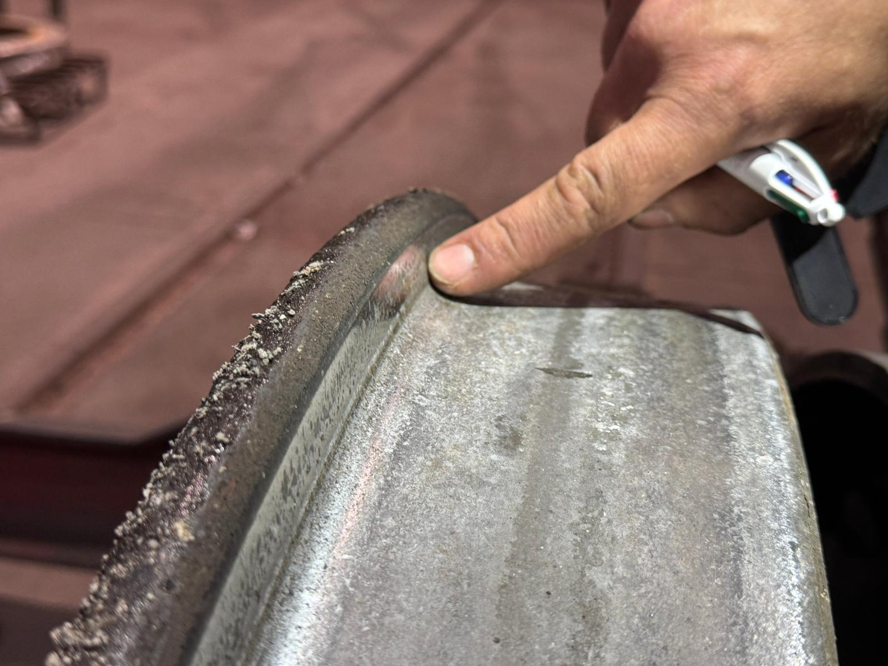
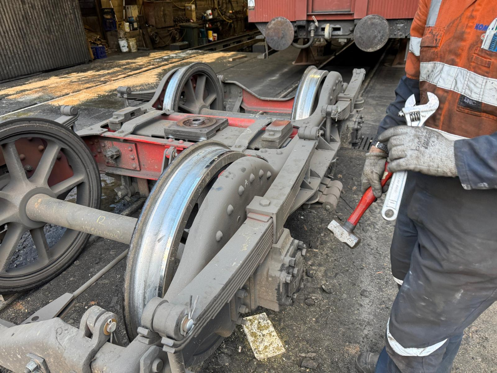
02
輪子的磨耗：用量規一個一個量Wheel wear: measured one by one with gauges
火車的車輪不是平的，內側有一圈凸起的「輪緣」，靠它卡住鐵軌、不讓車輪滑出去。輪子每天在鐵軌上磨，輪緣會變薄、變高，輪面也會磨出凹槽。我們用特定的量規一項一項量，超過標準就要重新車削或更換。Train wheels aren't flat. On the inside is a raised rim, the flange, which keeps the wheel on the rail. As wheels roll on the rails every day, the flange gets thinner and taller, and a hollow wears into the tread. We measure each item with a specific gauge; anything beyond the limit has to be re-turned or replaced.
輪輞厚度 Rim Thickness≥ 22 mm
輪緣厚度 Flange Thickness≥ 19 mm
輪緣高度 Flange Height≤ 36 mm
踏面凹陷 Tread Hollow≤ 3 mm
輪緣稜角 Arris≤ 1.5 mm
也就是說，該厚的地方不能磨得太薄，會越磨越大的地方不能超過上限。照片裡那組拆下來的轉向架，輪面剛車削過，還閃著金屬光。In other words, the parts that should be thick must not wear too thin, and the measures that grow with wear must not pass their limit. The bogie in the photo has freshly turned treads, still bright bare metal.
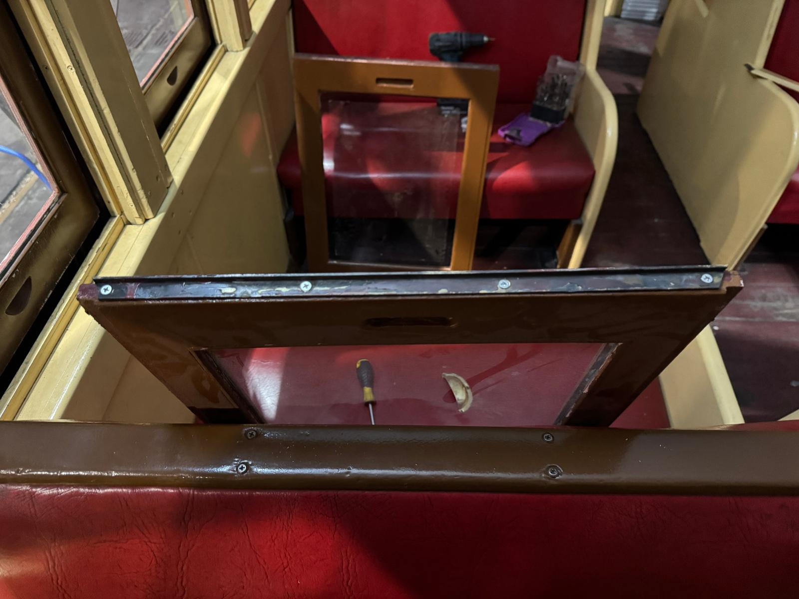
03
車廂裡的大小事：窗戶、座椅、電箱、太陽能板Inside the carriages: windows, seats, electrical boxes, solar panels
乘客碰得到的每一樣東西，都會在機廠檢查：卡住的木窗要拆下來整修、上漆，破損的座椅要換皮，車上的電箱也要定期檢查。每節車廂的車頂都有自己的太陽能板，專門供電給那節車廂裡的燈。這些木造車廂大多有幾十年的歷史，修的時候要盡量保留原本的樣子。Everything passengers touch is checked in the workshop. Sticking timber windows are removed, restored and repainted, damaged seats are re-covered, and each carriage's electrical box is inspected regularly. Every carriage has its own solar panel on the roof, powering that carriage's lights. Most of these timber carriages are decades old, so repairs keep as much of their original character as possible.
04
還在等待的車：翻修中的機車與車廂Still waiting: locomotives and carriages under restoration
機廠裡停著好幾台正在翻修的蒸汽機車和車廂，有些是從外地買回來的二手車。它們現在還不能上路，但都會一台一台修好，放回軌道上運行。對志工來說，這些車代表的是未來：可運行的車越多，每天能開的班次就越多。Several steam locomotives and carriages are in the workshop being restored, some bought second-hand from elsewhere. They can't run yet, but each will be repaired and returned to service in turn. For the volunteers these vehicles are the future: the more stock that can run, the more trains can run each day.
機廠為什麼在山下？Why is the workshop at the bottom of the hill?
Bottom Points 機廠沒有道路直達，也沒有天車，重零件要靠火車運下山；每天早上，還要把空車開上 Clarence 才能載客。當初蓋在這裡，是因為合作社那時還沒有 Clarence 的土地。2013 年的林火也燒毀了這裡的夾層。不少志工希望，未來能在 Clarence 蓋一座新機廠。The Bottom Points workshop has no road access and no overhead crane, so heavy parts have to come down the mountain by train, and every morning the empty train has to run up to Clarence before it can carry passengers. It was built here because, at the time, the co-operative didn't yet have land at Clarence. The 2013 bushfire also destroyed the mezzanine here. Many volunteers hope a new workshop can one day be built at Clarence.
「我們只是保管人。」“We are only custodians.”機廠主管 MichaelMichael, workshop manager
07回程The return trip · 1989 / 2026
35 年前的問題，現在解決了嗎？Thirty-five years on, have the old questions been answered?
1989 年，環境科學家 Jim Longworth 在 Zig Zag 的月台上訪問了 256 位候車遊客，並在 1991 年發表了研究。2026 年，我訪問了 14 位志工與員工。把兩邊的話放在一起，可以看到哪些事沒變、哪些已經不一樣了。In 1989, environmental scientist Jim Longworth surveyed 256 visitors waiting on the Zig Zag platforms, and published his study in 1991. In 2026, I interviewed 14 volunteers and staff. Putting the two side by side shows what hasn't changed and what has.
1989 年問卷1989 survey
61%對鐵路本身沒有興趣had no interest in railways as such
74%是第一次來were first-time visitors
65%來自雪梨came from Sydney
39%專程為 Zig Zag 來藍山came to the Blue Mountains specifically for the Zig Zag
35 年前，Longworth 用 1869–1910 年的樣子來判斷「真不真」。今天的志工則告訴我，這 50 年的重建、關閉與重生，也是這條鐵路的歷史。真實性的定義，會隨時間改變。Thirty-five years ago, Longworth judged what was “real” by how the line looked in 1869–1910. Today's volunteers told me that these 50 years of rebuilding, closure and revival are also the railway's history. What counts as authentic changes over time.
資料來源：Source: Longworth, J. (1991). Preserving the Iron Horse. Australian Planner, 29(2), 83–87. 數字只用內文寫明的部分。Only figures stated in the text are used.
08回到 ClarenceBack to Clarence
下一站在哪裡？Where's the next stop?
我請每個人描述他們理想中的 Zig Zag。願景大小不同，背後是同一件事：希望這條鐵路繼續存在，而且變得更好。點開每個願景，看看他們想像的未來。I asked everyone to describe their ideal Zig Zag. The visions differ in size, but behind them is the same wish: that this railway keeps going, and gets better. Open each vision to see the future they imagine.